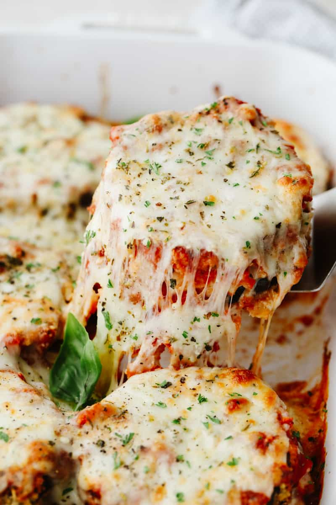

Eggplant Parmesan

Description
Crisp, saucy, and flavorful eggplant Parmesan is just one easy recipe away. You'll find the full recipe below with step-by-step instructions, but here's what you can expect when you make this top-rated recipe.
Ingredients:
- Eggplant
- 2 eggs
- Seasoned bread
- Spaghetti sauce
Steps:
- Preheat the oven to 350 degrees F (175 degrees C).
- Dip eggplant slices in beaten egg, then in bread crumbs to coat. Place in a single layer on a baking sheet.
- Bake in the preheated oven for 5 minutes. Flip and bake for 5 more minutes.
- Spread spaghetti sauce to cover the bottom of a 9x13-inch baking dish. Place a layer of eggplant slices in the sauce. Sprinkle with mozzarella and Parmesan cheeses. Repeat layers with remaining sauce, eggplant, and cheese, ending with a cheese layer. Sprinkle basil on top.
- Cover with foil and bake.
- Bake in the preheated oven until golden brown, about 35 minutes.